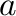
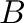
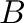
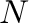
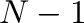

Next: Optimization of the objective Up: Dynamic programming for sequence Previous: Similarity versus distance scores Contents Index
In the discussion of the previous section, we have assumed that the
sequences or structures would be compared in a pairwise manner.
However, such pairwise comparisons of several related proteins may not
be self consistent, ie the following transitivity rule can be
broken: If residue  from protein  is equivalent to residue
is equivalent to residue  in protein  which in turn is equivalent to residue
in protein  which in turn is equivalent to residue  in protein
in protein
 then the residue from protein must also be equivalent to
residue from protein . This property is not always attained in
the set of usual pairwise comparisons relating a group of similar
proteins. For this reason we proceed by simultaneously aligning all
proteins. This is achieved by aligning the second sequence with the
first one, the third sequence with the alignment of the first two,
etc. A more general tree-like growth of the multiple alignment is
not yet implemented.
then the residue from protein must also be equivalent to
residue from protein . This property is not always attained in
the set of usual pairwise comparisons relating a group of similar
proteins. For this reason we proceed by simultaneously aligning all
proteins. This is achieved by aligning the second sequence with the
first one, the third sequence with the alignment of the first two,
etc. A more general tree-like growth of the multiple alignment is
not yet implemented.
If the number of all proteins is ,  alignments must be made to obtain the final multiple comparison. It is noted that once an equivalence or gap is introduced it is not changed in later stages.